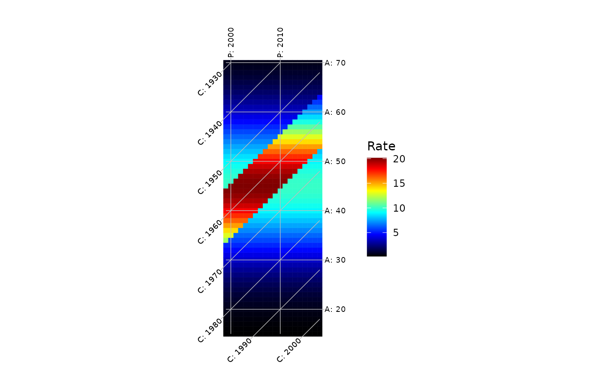

gg_hexamap() draws a hexamap (or a Lexis diagram, with
tiles = "square") as a ggplot object, which can be modified with the
usual ggplot2 functions such as ggplot2::labs() or ggplot2::theme().
Give a named list of matrices to draw one panel per element, sharing one
color scale. autoplot() does the same for a layout computed by
hexamap_layout(). Both need the 'ggplot2' package.
Usage
gg_hexamap(
data,
...,
labels = c(age = "A: ", period = "P: ", cohort = "C: "),
highlight = NULL,
line_color = "grey",
line_width = 0.25,
label_size = 2.5,
label_color = "black",
scale_units = "Rate",
na_color = "grey90",
ncol = NULL
)
# S3 method for class 'hexamap_layout'
autoplot(
object,
labels = c(age = "A: ", period = "P: ", cohort = "C: "),
highlight = NULL,
line_color = "grey",
line_width = 0.25,
label_size = 2.5,
label_color = "black",
scale_units = "Rate",
na_color = "grey90",
...
)Arguments
- data
A numeric matrix with ages as rows and periods as columns, as in
hexamap(), or a named list of such matrices to draw as panels. The names label the panels.- ...
Arguments passed to
hexamap_layout(), such asfirst_age,first_period,interval,colorbar_range,colorbar_scale,palette,midpoint,isolinesortiles.- labels
Named character vector with the prefixes of the
age,periodandcohortisoline labels. Missing names keep their default, solabels = c(period = "Year: ")only changes the period labels.- highlight
List of ages, periods and/or cohorts to draw as highlighted lines, with optional
colandlwd, e.g.list(cohort = 1975)orlist(age = c(30, 50), col = "white", lwd = 2). Values need not be isolines but must be within the range of the data. Their labels are drawn in bold.- line_color
Color of the isolines.
- line_width
Width of the isolines, in mm (as
linewidthin ggplot2).- label_size
Size of the isoline labels, in mm (as
sizeinggplot2::geom_text()).- label_color
Color of the isoline labels.
- scale_units
Text displayed above the colorbar.
- na_color
Color of cells with missing values (for example, suppressed counts).
NAleaves them blank.- ncol
Number of columns of panels when
datais a list.- object
A
hexamap_layoutobject.
Examples
if (requireNamespace("ggplot2", quietly = TRUE)) {
rates <- simulate_apc(15:70, 1999:2018,
age_effect = function(a) -((a - 45) / 15)^2,
cohort_effect = function(c) ifelse(c >= 1955 & c <= 1965, 0.7, 0))
gg_hexamap(rates, highlight = list(cohort = 1960)) +
ggplot2::labs(title = "Simulated cohort effect")
# one panel per group, with a shared color scale
later <- simulate_apc(15:70, 1999:2018,
age_effect = function(a) -((a - 35) / 12)^2,
period_effect = function(p) 0.1 * pmax(p - 2010, 0))
gg_hexamap(list(`Cohort effect` = rates, `Period effect` = later))
# autoplot() draws a precomputed layout, here as a Lexis diagram
ggplot2::autoplot(hexamap_layout(rates, tiles = "square"))
}
